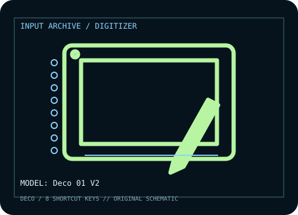

[ PEN TABLETS AND DIGITIZERS // IDENTIFIED COMPONENT ]
XP-Pen Deco 01 V2
Slim 10 × 6.25-inch graphics tablet with eight shortcut keys and a battery-free stylus.

MODEL IDENTIFICATION: Manufacturer model / identifier: Deco 01 V2. Confirm the unit label, bundle contents, regional suffix, and revision against its product documentation before compatibility or repair work.
Model specifications
| Catalog subcategory | Pen tablets and digitizers |
|---|---|
| Exact model / SKU | Deco 01 V2 |
| Active area | 254 × 158.75 mm (10 × 6.25 in) active area. |
| Pressure and pen technology | 8,192 pressure levels; battery-free passive stylus with up to 60° tilt. |
| Resolution / report rate | 5,080 lpi resolution and ≥200 RPS report rate are listed for Deco 01 V2. |
| Interface | USB-C tablet connection; supplied cable connects to USB host. Android/mobile compatibility may require an adapter. |
| Driver, OS and compatibility | XP-Pen lists Windows, macOS, Linux, Chrome OS, and compatible Android support; driver features differ by OS, so check current Deco 01 V2 downloads and supported app versions. |
| Power | USB bus-powered; stylus has no battery. |
| Calibration and service notes | Use XP-Pen Pentablet driver to map the tablet to the intended display and set pressure curve; confirm Android landscape mapping when used with a mobile device. |
Preservation and service notes
USB bus-powered; stylus has no battery. Use XP-Pen Pentablet driver to map the tablet to the intended display and set pressure curve; confirm Android landscape mapping when used with a mobile device.
Record the as-found model label, accessories, host OS, driver/firmware version, calibration state, and test method. Published capability does not guarantee compatibility with a particular application or individual used unit.
Manufacturer sources
- Deco 01 V2 — XP-PenManufacturer product page for tablet area, pen and model-specific feature specifications.
- Downloads — XP-PenManufacturer driver/manual downloads; select Deco 01 V2 and the host operating system.
Manufacturer product and support pages can change. Save the applicable manual/driver release notes and verify the exact model and revision at setup.